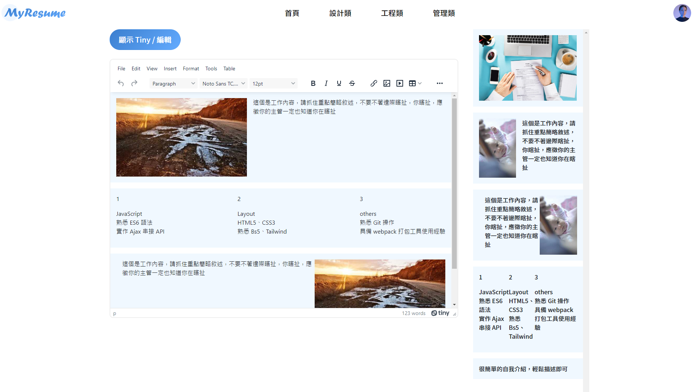
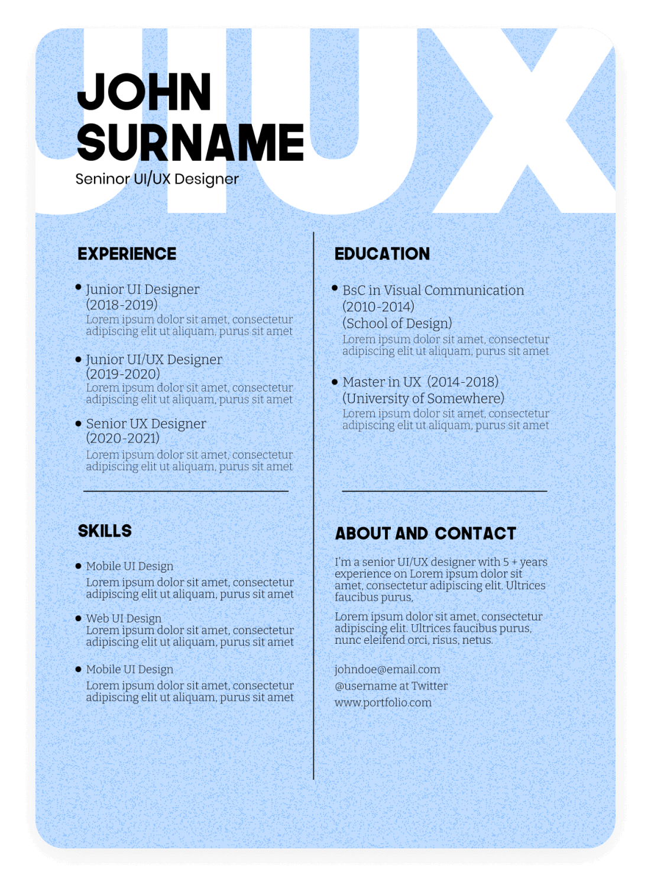
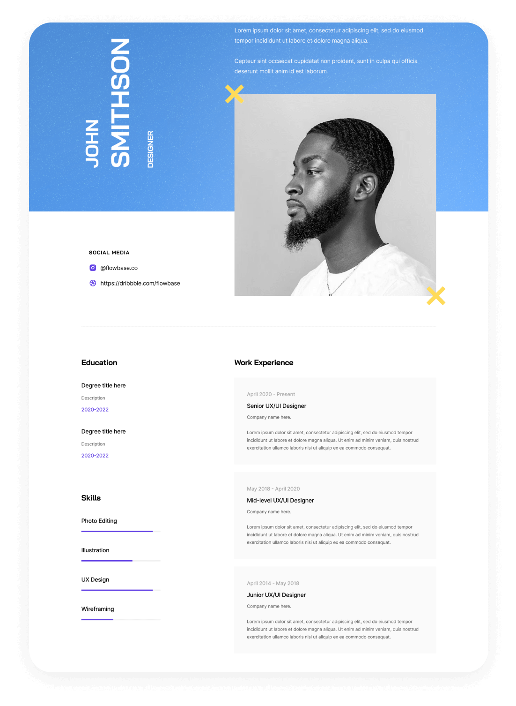
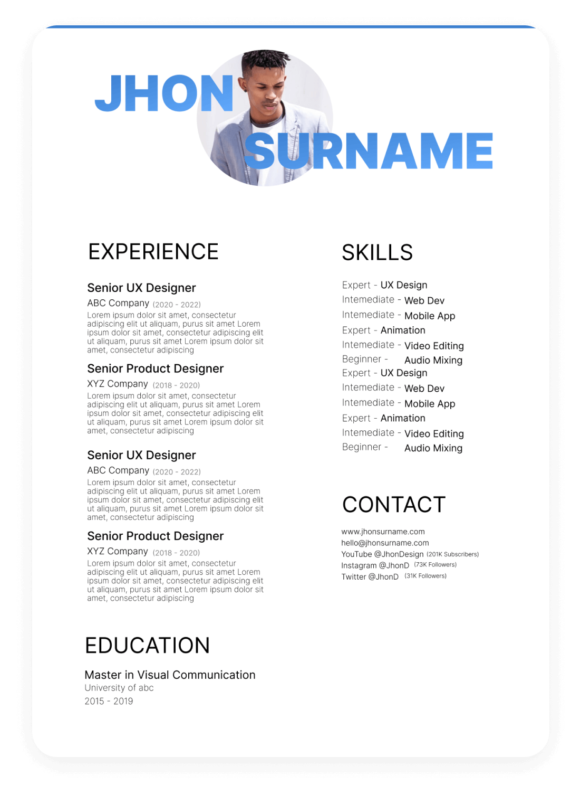
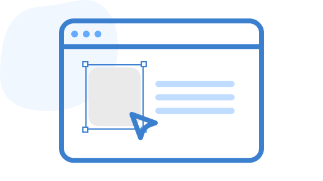

<section class="container text-center">
  <!-- 為自己找份好工作 -->
  <h2 class="mt-10 mt-lg-20 fs-4 fs-lg-1 fw-bold">為自己找份好工作</h2>
  <h3 class="mt-2 mt-lg-6 fs-base fs-lg-3 text-light">
    工欲善其事，必先利其器
  </h3>
  <a
    id="makeResume"
    class="btn rounded-pill background-gradient-linear text-white py-3 px-6 fs-base fs-lg-5 mt-6 mt-lg-10"
    href="./editor.html"
    >製作履歷</a
  >
  <div class="d-flex justify-content-center">
    
  </div>
</section>
<!-- 為自己找份好工作 end -->

<section class="text-center bg-gray mt-10 mt-lg-20 py-10 py-lg-20">
  <!-- 快速製作屬於自己的履歷 -->
  <h2 class="fs-4 fs-lg-1 fw-bold">快速製作屬於自己的求職履歷</h2>

  <div class="d-flex justify-content-center container">
    <video
      class="mt-6 mt-lg-10 w-100 rounded-16px"
      src="./assets/images/bandicam.mp4"
      poster="./assets/images/製作履歷示意圖.png"
      autoplay
      preload="auto"
      loop
      muted
      playsinline
    ></video>
    <!-- video 標籤在 ios 行動裝置上，想要 autoplay 必須同時具備 muted、playsinline -->
  </div>
  <div>
    <a
      id="makeResume"
      class="btn rounded-pill background-gradient-linear text-white py-3 px-6 fs-base fs-lg-5 mt-6 mt-lg-10"
      href="./editor.html"
      >製作履歷</a
    >
  </div>
</section>
<!-- 快速製作屬於自己的履歷 end -->

<section class="container my-10 my-lg-20">
  <!-- 不同類別的風格模板 -->
  <div
    class="d-flex justify-content-center justify-content-md-between align-items-center flex-wrap"
  >
    <h2 class="fs-4 fs-lg-1 fw-bold">不同類別的風格模板</h2>
    <div class="dropdown template-class mt-6 mt-md-0">
      <button
        class="btn btn-secondary dropdown-toggle d-flex justify-content-between"
        type="button"
        id="dropdownMenuButton1"
        data-bs-toggle="dropdown"
        aria-expanded="false"
      >
        設計類
      </button>
      <ul
        class="dropdown-menu mt-2 dropdown-shadow border-transparent"
        aria-labelledby="dropdownMenuButton1"
      >
        <li><a class="dropdown-item py-3 px-6" href="#">設計類</a></li>
        <li><a class="dropdown-item py-3 px-6" href="#">管理類</a></li>
        <li><a class="dropdown-item py-3 px-6" href="#">工程類</a></li>
      </ul>
    </div>
  </div>
  <div class="position-relative">
    <div class="swiper resumeSwiper mt-lg-10 mt-6">
      <div class="swiper-wrapper">
        <div class="swiper-slide">
          <div>
            
          </div>
        </div>
        <div class="swiper-slide">
          <div>
            
          </div>
        </div>
        <div class="swiper-slide">
          <div>
            
          </div>
        </div>
      </div>
      <div class="swiper-pagination mt-lg-10 mt-6"></div>
    </div>
    <div class="swiper-button-prev"></div>
    <div class="swiper-button-next"></div>
  </div>
</section>
<!-- 不同類別的風格模板 end -->

<section class="bg-gray py-10 py-lg-20">
  <!-- 下載完全免費 -->
  <div class="container">
    <div class="d-lg-flex justify-content-center text-center text-lg-start">
      <div class="mr-lg-12 d-flex justify-content-center">
        
      </div>
      <div class="d-lg-flex flex-column justify-content-center">
        <h2 class="mt-3 mt-lg-0 fs-4 fs-lg-1 fw-bold">下載完全免費</h2>
        <h3 class="mt-2 mt-lg-6 fs-base fs-lg-3 text-light">
          將辛苦完成的履歷下載為己用！
        </h3>
        <div>
          <a
            id="makeResume"
            class="btn rounded-pill background-gradient-linear text-white py-3 px-6 fs-base fs-lg-5 mt-3 mt-lg-10"
            href="./editor.html"
            >製作履歷</a
          >
        </div>
      </div>
    </div>
    <div
      class="d-lg-flex justify-content-center flex-row-reverse text-center text-lg-start mt-6 mt-lg-16"
    >
      <div class="ml-lg-12 d-flex justify-content-center">
        
      </div>
      <div class="d-lg-flex flex-column justify-content-center text-lg-end">
        <h2 class="mt-3 mt-lg-0 fs-4 fs-lg-1 fw-bold">各式各樣的拖拉模板</h2>
        <h3 class="mt-2 mt-lg-6 fs-base fs-lg-3 text-light">
          提供各種模板，讓你的靈感不再缺乏！
        </h3>
        <div>
          <a
            id="makeResume"
            class="btn rounded-pill background-gradient-linear text-white py-3 px-6 fs-base fs-lg-5 mt-3 mt-lg-10"
            href="./editor.html"
            >製作履歷</a
          >
        </div>
      </div>
    </div>
  </div>
</section>
<!-- 下載完全免費 end -->
